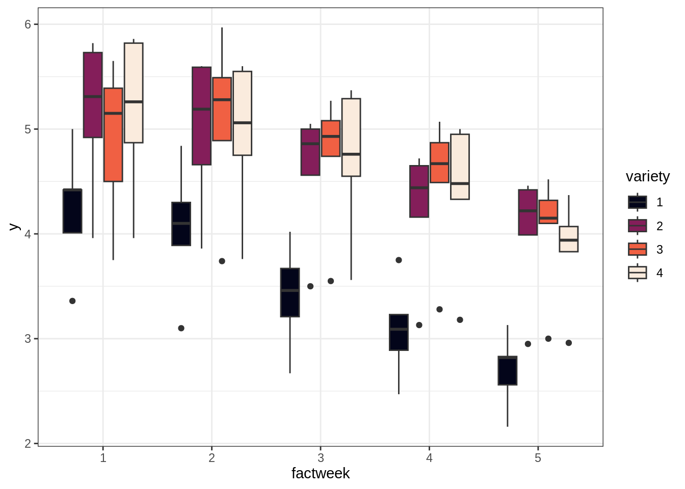
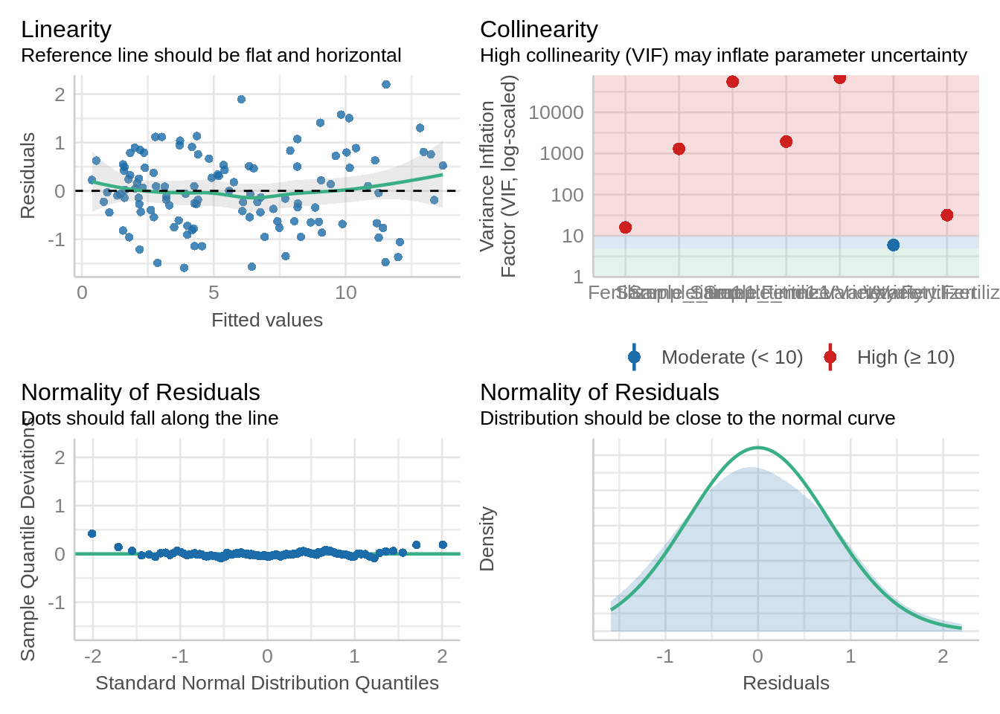
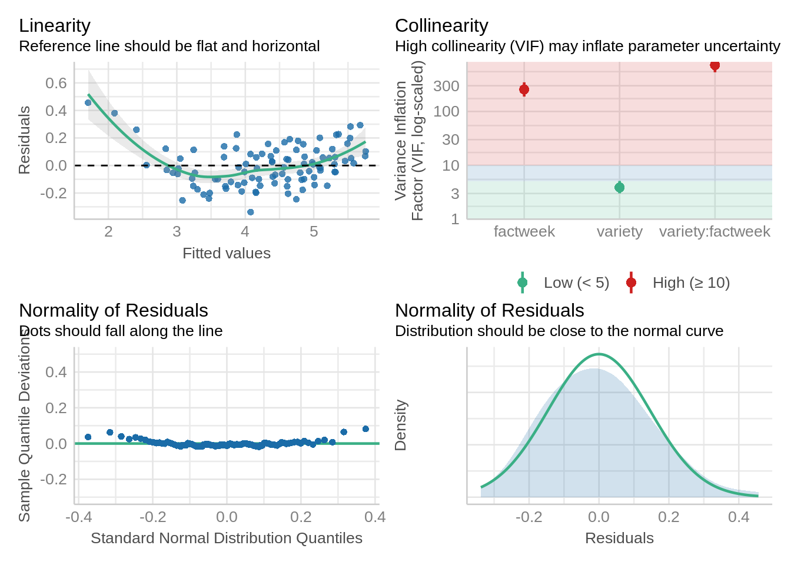
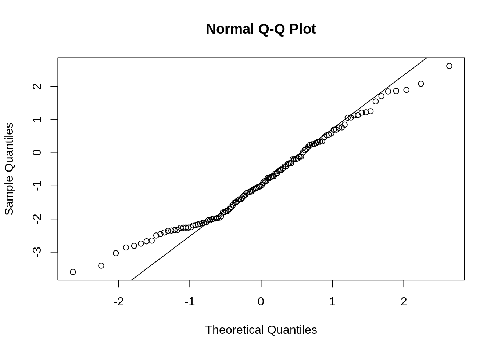

library(dplyr)
library(nlme)
library(mmrm)
library(emmeans)
library(performance)7 Repeated measures
Studies that involve repeated observations of the exact same experimental units require a repeated measures component to properly model correlations across time with the experiment unit. This is common in any perennial crop that is evaluated across years, hay crops subject to repeat cuttings, and many other circumstances. In these models, the ‘iid’ assumption (idependently and identically distributed) is being violated, so we need to introduce specialized covariance structures that can account for these correlations between error terms.
There are several types of structures.
The repeated measures syntax in nlme follow this convention: form = ~ time|grouping. You can also use 1|group and the observation order for each group will be. The default starting value (value) is zero, and if fixed = FALSE (the current nlme default), this value will be allowed to change during the model fitting process.
There are several other options in the nlm machinery (search “cor” for more options and details on the syntax).
Fitting models with correlated observations requires new libraries including mmrm and nlme. lmer allows random effects only.
7.0.1 Talk about different covariance structures and provide reference for details
Packages required for this tutorial:
- Repeated Measures RCBD
The example shown below contains data from a sorghum trial laid out as a randomized complete block design (5 blocks) with variety (4 varieties) treatment effect. The response variable ‘y’ is the leaf area index assessed in five consecutive weeks on each plot.
We need to have time as numeric and factor variable. In the model, to assess the week effect, week was used as a factor (factweek). For the correlation matrix, week needs to be numeric (week).
dat <- agriTutorial::sorghum %>%
mutate(week = as.numeric(factweek),
block = as.character(varblock))
str(dat)'data.frame': 100 obs. of 9 variables:
$ y : num 5 4.84 4.02 3.75 3.13 4.42 4.3 3.67 3.23 2.83 ...
$ variety : Factor w/ 4 levels "1","2","3","4": 1 1 1 1 1 1 1 1 1 1 ...
$ Replicate: Factor w/ 5 levels "1","2","3","4",..: 1 1 1 1 1 2 2 2 2 2 ...
$ factweek : Factor w/ 5 levels "1","2","3","4",..: 1 2 3 4 5 1 2 3 4 5 ...
$ factplot : Factor w/ 20 levels "1","2","3","4",..: 1 1 1 1 1 2 2 2 2 2 ...
$ varweek : int 1 2 3 4 5 1 2 3 4 5 ...
$ varblock : int 1 1 1 1 1 2 2 2 2 2 ...
$ week : num 1 2 3 4 5 1 2 3 4 5 ...
$ block : chr "1" "1" "1" "1" ...cs1 <- corAR1(form = ~ week|block/factplot, value = 0.2, fixed = FALSE)
cs2 <- corCompSymm(form = ~ week|block/factplot, value = 0.2, fixed = FALSE)
lm1 <- lme(y ~ variety + factweek + variety:factweek, random = ~1|block/factplot,
data = dat,
na.action = na.exclude)
lm2 <- update(lm1, corr = cs1)
lm3 <- update(lm1, corr= cs2)
# Compare models with different correlation structure using anova()
anova(lm1, lm2, lm3) Model df AIC BIC logLik Test L.Ratio p-value
lm1 1 23 18.837478 73.62409 13.58126
lm2 2 24 -2.347391 54.82125 25.17370 1 vs 2 23.18487 <.0001
lm3 3 24 20.837478 78.00612 13.58126 We can compare the performance of these models (lm1, lm2, lm3) either by using anova() or by compare_performance() function from the ‘performance’ library.
anova(lm1, lm2, lm3) Model df AIC BIC logLik Test L.Ratio p-value
lm1 1 23 18.837478 73.62409 13.58126
lm2 2 24 -2.347391 54.82125 25.17370 1 vs 2 23.18487 <.0001
lm3 3 24 20.837478 78.00612 13.58126 ## or
result <- compare_performance(lm1, lm2, lm3)Some of the nested models seem to be identical and probably only vary in
their random effects.print_md(result)| Name | Model | AIC (weights) | AICc (weights) | BIC (weights) | R2 (cond.) | R2 (marg.) | ICC | RMSE | Sigma |
|---|---|---|---|---|---|---|---|---|---|
| lm1 | lme | -50.5 (<.001) | -36.0 (<.001) | 9.4 (<.001) | 0.99 | 0.37 | 0.98 | 0.10 | 0.13 |
| lm2 | lme | -77.5 (>.999) | -61.5 (>.999) | -15.0 (>.999) | 0.97 | 0.41 | 0.95 | 0.15 | 0.18 |
| lm3 | lme | -48.5 (<.001) | -32.5 (<.001) | 14.0 (<.001) | 0.98 | 0.37 | 0.98 | 0.11 | 0.14 |
##model with AR1 correaltion matrix is better7.1 Model Diagnostcis
check_model(lm2)Converting missing values (`NA`) into regular values currently not
possible for variables of class `NULL`.
7.2 Post-Hoc Analysis
anova(lm2) numDF denDF F-value p-value
(Intercept) 1 64 231.49887 <.0001
variety 3 12 69.53675 <.0001
factweek 4 64 186.02244 <.0001
variety:factweek 12 64 7.03546 <.00017.3 Emmeans
mean_1 <- emmeans(lm2, ~ variety)NOTE: Results may be misleading due to involvement in interactionsmean_1 variety emmean SE df lower.CL upper.CL
1 3.50 0.288 4 2.70 4.29
2 4.59 0.288 4 3.79 5.39
3 4.63 0.288 4 3.84 5.43
4 4.61 0.288 4 3.81 5.40
Results are averaged over the levels of: factweek
Degrees-of-freedom method: containment
Confidence level used: 0.95 pairs(mean_1) contrast estimate SE df t.ratio p.value
variety1 - variety2 -1.0940 0.0932 12 -11.738 <.0001
variety1 - variety3 -1.1380 0.0932 12 -12.210 <.0001
variety1 - variety4 -1.1092 0.0932 12 -11.901 <.0001
variety2 - variety3 -0.0440 0.0932 12 -0.472 0.9638
variety2 - variety4 -0.0152 0.0932 12 -0.163 0.9984
variety3 - variety4 0.0288 0.0932 12 0.309 0.9892
Results are averaged over the levels of: factweek
Degrees-of-freedom method: containment
P value adjustment: tukey method for comparing a family of 4 estimates mean_2 <- emmeans(lm2, ~ variety:factweek)
mean_2 variety factweek emmean SE df lower.CL upper.CL
1 1 4.24 0.291 4 3.43 5.05
2 1 5.15 0.291 4 4.34 5.96
3 1 4.89 0.291 4 4.08 5.70
4 1 5.15 0.291 4 4.35 5.96
1 2 4.05 0.291 4 3.24 4.85
2 2 4.98 0.291 4 4.17 5.79
3 2 5.07 0.291 4 4.27 5.88
4 2 4.94 0.291 4 4.14 5.75
1 3 3.41 0.291 4 2.60 4.21
2 3 4.59 0.291 4 3.79 5.40
3 3 4.71 0.291 4 3.91 5.52
4 3 4.71 0.291 4 3.90 5.51
1 4 3.09 0.291 4 2.28 3.89
2 4 4.22 0.291 4 3.41 5.03
3 4 4.48 0.291 4 3.67 5.28
4 4 4.39 0.291 4 3.58 5.20
1 5 2.70 0.291 4 1.89 3.51
2 5 4.01 0.291 4 3.20 4.82
3 5 4.02 0.291 4 3.21 4.83
4 5 3.83 0.291 4 3.03 4.64
Degrees-of-freedom method: containment
Confidence level used: 0.95 - Split plot repeated measures
- using mmrm() from mmrm package:
The example shown below contains yield data in a split-plot design. In this data set, we have:
Variety: 2 levels
Fertilizer: 3 levels
Replications: 4
The yield data was collected repeatedly from the same Reps over 5 ‘Sample_times’.
This can be analyze either using nlme or mmrm.
library(readr)
Yield <- read_csv(here::here("data/Yield.csv"))Rows: 120 Columns: 6
── Column specification ────────────────────────────────────────────────────────
Delimiter: ","
chr (1): Variety
dbl (5): Sample_time, Fertilizer, Rep, pH, Yield
ℹ Use `spec()` to retrieve the full column specification for this data.
ℹ Specify the column types or set `show_col_types = FALSE` to quiet this message.head(Yield)# A tibble: 6 × 6
Sample_time Variety Fertilizer Rep pH Yield
<dbl> <chr> <dbl> <dbl> <dbl> <dbl>
1 1 VAR1 1 1 7.07 0.604
2 1 VAR1 1 2 7.06 0.595
3 1 VAR1 1 3 7.08 3.15
4 1 VAR1 1 4 7.09 3.09
5 1 VAR1 2 1 7.13 2.42
6 1 VAR1 2 2 7.12 2.62 str(Yield)spc_tbl_ [120 × 6] (S3: spec_tbl_df/tbl_df/tbl/data.frame)
$ Sample_time: num [1:120] 1 1 1 1 1 1 1 1 1 1 ...
$ Variety : chr [1:120] "VAR1" "VAR1" "VAR1" "VAR1" ...
$ Fertilizer : num [1:120] 1 1 1 1 2 2 2 2 3 3 ...
$ Rep : num [1:120] 1 2 3 4 1 2 3 4 1 2 ...
$ pH : num [1:120] 7.07 7.06 7.08 7.09 7.13 7.12 7.15 7.14 7.18 7.18 ...
$ Yield : num [1:120] 0.604 0.595 3.145 3.091 2.415 ...
- attr(*, "spec")=
.. cols(
.. Sample_time = col_double(),
.. Variety = col_character(),
.. Fertilizer = col_double(),
.. Rep = col_double(),
.. pH = col_double(),
.. Yield = col_double()
.. )
- attr(*, "problems")=<externalptr> 7.4 Model fit
using lme() from nlme package.
To fit model, we first need to convert Variety, Fertilizer, and Sample_time as factors. In addition, we need to create a new variable named ‘plot’ with a unique value for each plot. The plot will be used as a subject with repeated measures. The subject variable can be factor or numeric but the time (it could be year, or sample_time) has to be a factor.
Yield$Variety <- factor(Yield$Variety)
Yield$Fertilizer <- factor(Yield$Fertilizer)
Yield$Sample_time1 <- factor(Yield$Sample_time)
Yield$Rep <- factor(Yield$Rep)
table(Yield$Fertilizer, Yield$Variety)
VAR1 VAR2
1 20 20
2 20 20
3 20 20##creating a plot variable
Yield$plot <- factor(paste(Yield$Rep, Yield$Fertilizer, Yield$Variety, sep='-'))
Yield$Rep2 <- factor(paste(Yield$Rep, Yield$Variety, sep='-'))
table(Yield$plot)
1-1-VAR1 1-1-VAR2 1-2-VAR1 1-2-VAR2 1-3-VAR1 1-3-VAR2 2-1-VAR1 2-1-VAR2
5 5 5 5 5 5 5 5
2-2-VAR1 2-2-VAR2 2-3-VAR1 2-3-VAR2 3-1-VAR1 3-1-VAR2 3-2-VAR1 3-2-VAR2
5 5 5 5 5 5 5 5
3-3-VAR1 3-3-VAR2 4-1-VAR1 4-1-VAR2 4-2-VAR1 4-2-VAR2 4-3-VAR1 4-3-VAR2
5 5 5 5 5 5 5 5 7.5 Model fit
corr_str1 = corAR1(form = ~ Sample_time|Rep/Variety/plot, value = 0.2, fixed = FALSE)
corr_str2 = corCompSymm(form = ~ Sample_time|Rep/Variety/plot, fixed = FALSE)
# establish model
mod <- lme(Yield ~ Sample_time1*Variety*Fertilizer,
random = ~ 1|Rep/Variety/plot,
data = Yield, na.action= na.exclude)
##update model with correlation matrix
mod1 <- update(mod, corr= corr_str1)
mod2 <- update(mod, corr= corr_str2)
##compare different correlation matrices
anova(mod, mod1, mod2) Model df AIC BIC logLik Test L.Ratio p-value
mod 1 34 387.9459 472.9394 -159.9729
mod1 2 35 389.8854 477.3788 -159.9427 1 vs 2 0.06044197 0.8058
mod2 3 35 389.9459 477.4392 -159.9729 A model with AR1 is better than compared to the model with compound symmetry structure.
7.5.1 Model diagnostics
check_model(mod1)Converting missing values (`NA`) into regular values currently not
possible for variables of class `NULL`.
Post-Hoc analysis
anova(mod1) numDF denDF F-value p-value
(Intercept) 1 72 203.81670 <.0001
Sample_time1 4 72 157.70742 <.0001
Variety 1 3 4.11752 0.1355
Fertilizer 2 12 92.58733 <.0001
Sample_time1:Variety 4 72 0.29760 0.8786
Sample_time1:Fertilizer 8 72 19.66649 <.0001
Variety:Fertilizer 2 12 0.19841 0.8227
Sample_time1:Variety:Fertilizer 8 72 0.73170 0.6631emm <- emmeans(mod1,~ Fertilizer)NOTE: Results may be misleading due to involvement in interactionspairs(emm) contrast estimate SE df t.ratio p.value
Fertilizer1 - Fertilizer2 -4.26 0.431 12 -9.879 <.0001
Fertilizer1 - Fertilizer3 -5.62 0.431 12 -13.040 <.0001
Fertilizer2 - Fertilizer3 -1.36 0.431 12 -3.161 0.0208
Results are averaged over the levels of: Sample_time1, Variety
Degrees-of-freedom method: containment
P value adjustment: tukey method for comparing a family of 3 estimates 7.5.1.0.1 Fitting Model using mmrm() from the mmrm package:
fit1 <- mmrm(
formula = Yield ~ Sample_time1*Variety*Fertilizer + ar1(Sample_time1|Rep/plot),
data = Yield)
summary(fit1)mmrm fit
Formula: Yield ~ Sample_time1 * Variety * Fertilizer + ar1(Sample_time1 |
Rep/plot)
Data: Yield (used 120 observations from 24 subjects with maximum 5
timepoints)
Covariance: auto-regressive order one (8 variance parameters of 4 groups)
Method: Satterthwaite
Vcov Method: Asymptotic
Inference: REML
Model selection criteria:
AIC BIC logLik deviance
320.0 329.4 -152.0 304.0
Coefficients:
Estimate Std. Error df t value
(Intercept) 2.8556 0.4637 12.6530 6.158
Sample_time12 0.6556 0.3099 1.8140 2.115
Sample_time13 1.4042 0.4144 2.2920 3.388
Sample_time14 1.4573 0.4838 2.8660 3.012
Sample_time15 2.4676 0.5486 3.1380 4.498
VarietyVAR2 -1.0688 0.6558 12.6530 -1.630
Fertilizer2 1.6744 0.6558 12.6530 2.553
Fertilizer3 0.5952 0.6558 12.6530 0.908
Sample_time12:VarietyVAR2 -0.5911 0.4383 1.8140 -1.349
Sample_time13:VarietyVAR2 -0.4123 0.5861 2.2920 -0.704
Sample_time14:VarietyVAR2 -0.4697 0.6843 2.8660 -0.686
Sample_time15:VarietyVAR2 -1.0333 0.7758 3.1380 -1.332
Sample_time12:Fertilizer2 1.3372 0.4383 1.8140 3.051
Sample_time13:Fertilizer2 2.1910 0.5861 2.2920 3.739
Sample_time14:Fertilizer2 3.7979 0.6843 2.8660 5.551
Sample_time15:Fertilizer2 4.8424 0.7758 3.1380 6.242
Sample_time12:Fertilizer3 2.2033 0.4383 1.8140 5.027
Sample_time13:Fertilizer3 3.6240 0.5861 2.2920 6.183
Sample_time14:Fertilizer3 5.7761 0.6843 2.8660 8.442
Sample_time15:Fertilizer3 7.3779 0.7758 3.1380 9.510
VarietyVAR2:Fertilizer2 0.5290 0.9274 12.6530 0.570
VarietyVAR2:Fertilizer3 1.5638 0.9274 12.6530 1.686
Sample_time12:VarietyVAR2:Fertilizer2 0.8314 0.6198 1.8140 1.341
Sample_time13:VarietyVAR2:Fertilizer2 0.3481 0.8288 2.2920 0.420
Sample_time14:VarietyVAR2:Fertilizer2 0.7627 0.9677 2.8660 0.788
Sample_time15:VarietyVAR2:Fertilizer2 0.9813 1.0972 3.1380 0.894
Sample_time12:VarietyVAR2:Fertilizer3 0.6327 0.6198 1.8140 1.021
Sample_time13:VarietyVAR2:Fertilizer3 -0.1950 0.8288 2.2920 -0.235
Sample_time14:VarietyVAR2:Fertilizer3 -0.0170 0.9677 2.8660 -0.018
Sample_time15:VarietyVAR2:Fertilizer3 0.2325 1.0972 3.1380 0.212
Pr(>|t|)
(Intercept) 3.87e-05 ***
Sample_time12 0.18155
Sample_time13 0.06364 .
Sample_time14 0.06054 .
Sample_time15 0.01863 *
VarietyVAR2 0.12777
Fertilizer2 0.02446 *
Fertilizer3 0.38106
Sample_time12:VarietyVAR2 0.32119
Sample_time13:VarietyVAR2 0.54634
Sample_time14:VarietyVAR2 0.54384
Sample_time15:VarietyVAR2 0.27140
Sample_time12:Fertilizer2 0.10440
Sample_time13:Fertilizer2 0.05218 .
Sample_time14:Fertilizer2 0.01300 *
Sample_time15:Fertilizer2 0.00726 **
Sample_time12:Fertilizer3 0.04541 *
Sample_time13:Fertilizer3 0.01789 *
Sample_time14:Fertilizer3 0.00414 **
Sample_time15:Fertilizer3 0.00205 **
VarietyVAR2:Fertilizer2 0.57840
VarietyVAR2:Fertilizer3 0.11624
Sample_time12:VarietyVAR2:Fertilizer2 0.32313
Sample_time13:VarietyVAR2:Fertilizer2 0.71063
Sample_time14:VarietyVAR2:Fertilizer2 0.49058
Sample_time15:VarietyVAR2:Fertilizer2 0.43439
Sample_time12:VarietyVAR2:Fertilizer3 0.42397
Sample_time13:VarietyVAR2:Fertilizer3 0.83343
Sample_time14:VarietyVAR2:Fertilizer3 0.98713
Sample_time15:VarietyVAR2:Fertilizer3 0.84518
---
Signif. codes: 0 '***' 0.001 '**' 0.01 '*' 0.05 '.' 0.1 ' ' 1
Covariance estimate:
Group: 1
1 2 3 4 5
1 3.3958 3.3326 3.2705 3.2095 3.1497
2 3.3326 3.3958 3.3326 3.2705 3.2095
3 3.2705 3.3326 3.3958 3.3326 3.2705
4 3.2095 3.2705 3.3326 3.3958 3.3326
5 3.1497 3.2095 3.2705 3.3326 3.3958
Group: 2
1 2 3 4 5
1 3.9313 3.5606 3.2248 2.9207 2.6453
2 3.5606 3.9313 3.5606 3.2248 2.9207
3 3.2248 3.5606 3.9313 3.5606 3.2248
4 2.9207 3.2248 3.5606 3.9313 3.5606
5 2.6453 2.9207 3.2248 3.5606 3.9313
Group: 3
1 2 3 4 5
1 1.8891 1.0258 0.5570 0.3024 0.1642
2 1.0258 1.8891 1.0258 0.5570 0.3024
3 0.5570 1.0258 1.8891 1.0258 0.5570
4 0.3024 0.5570 1.0258 1.8891 1.0258
5 0.1642 0.3024 0.5570 1.0258 1.8891
Group: 4
1 2 3 4 5
1 1.6862 -0.7232 0.3102 -0.1330 0.0571
2 -0.7232 1.6862 -0.7232 0.3102 -0.1330
3 0.3102 -0.7232 1.6862 -0.7232 0.3102
4 -0.1330 0.3102 -0.7232 1.6862 -0.7232
5 0.0571 -0.1330 0.3102 -0.7232 1.6862Model Diagnostics
##check_model(asp.fit) ## performance package doesn't work with mmrm class.
plot(residuals(fit1)) 
qqnorm(residuals(fit1)); qqline(residuals(fit1))
Anova
# type III tests
car::Anova(fit1)mmrm() registered as car::Anova extensionAnalysis of Fixed Effect Table (Type II F tests)
Num Df Denom Df F Statistic Pr(>=F)
Sample_time1 4 2.0000 19.3168 0.049826 *
Variety 1 3.8878 2.1112 0.221860
Fertilizer 2 5.1356 29.2728 0.001557 **
Sample_time1:Variety 4 2.0000 1.0574 0.539021
Sample_time1:Fertilizer 8 2.0000 26.3829 0.037022 *
Variety:Fertilizer 2 8.0184 3.0751 0.102038
Sample_time1:Variety:Fertilizer 8 2.0000 0.5396 0.781917
---
Signif. codes: 0 '***' 0.001 '**' 0.01 '*' 0.05 '.' 0.1 ' ' 1Post-Hoc comparison
# cell means
asp.emm <- emmeans(fit1, c('Variety','Fertilizer')) NOTE: Results may be misleading due to involvement in interactionspairs(asp.emm) contrast estimate SE df t.ratio p.value
VAR1 Fertilizer1 - VAR2 Fertilizer1 1.570 0.491 8.02 3.198 0.0916
VAR1 Fertilizer1 - VAR1 Fertilizer2 -4.108 0.491 8.02 -8.366 0.0003
VAR1 Fertilizer1 - VAR2 Fertilizer2 -3.652 0.491 8.02 -7.437 0.0007
VAR1 Fertilizer1 - VAR1 Fertilizer3 -4.391 0.491 8.02 -8.943 0.0002
VAR1 Fertilizer1 - VAR2 Fertilizer3 -4.516 0.491 8.02 -9.197 0.0001
VAR2 Fertilizer1 - VAR1 Fertilizer2 -5.678 0.491 8.02 -11.564 <.0001
VAR2 Fertilizer1 - VAR2 Fertilizer2 -5.222 0.491 8.02 -10.634 0.0001
VAR2 Fertilizer1 - VAR1 Fertilizer3 -5.962 0.491 8.02 -12.141 <.0001
VAR2 Fertilizer1 - VAR2 Fertilizer3 -6.086 0.491 8.02 -12.394 <.0001
VAR1 Fertilizer2 - VAR2 Fertilizer2 0.456 0.491 8.02 0.929 0.9278
VAR1 Fertilizer2 - VAR1 Fertilizer3 -0.283 0.491 8.02 -0.577 0.9899
VAR1 Fertilizer2 - VAR2 Fertilizer3 -0.408 0.491 8.02 -0.830 0.9532
VAR2 Fertilizer2 - VAR1 Fertilizer3 -0.740 0.491 8.02 -1.506 0.6705
VAR2 Fertilizer2 - VAR2 Fertilizer3 -0.864 0.491 8.02 -1.760 0.5346
VAR1 Fertilizer3 - VAR2 Fertilizer3 -0.124 0.491 8.02 -0.253 0.9998
Results are averaged over the levels of: Sample_time1, Rep
P value adjustment: tukey method for comparing a family of 6 estimates - Split-split plot repeated measures
agridat::caribbean.maize isle site block plot trt ears yield
1 Antigua DBAN B1 1 T111 42 4.96
2 Antigua DBAN B1 2 T000 41 3.94
3 Antigua DBAN B1 3 T311 49 6.35
4 Antigua DBAN B1 4 T202 48 5.56
5 Antigua DBAN B1 5 T111 45 5.36
6 Antigua DBAN B1 6 T220 46 6.18
7 Antigua DBAN B1 7 T113 42 4.71
8 Antigua DBAN B1 8 T131 44 6.03
9 Antigua DBAN B1 9 T022 42 2.88
10 Antigua DBAN B2 10 T222 44 5.68
11 Antigua DBAN B2 11 T311 42 5.80
12 Antigua DBAN B2 12 T020 42 4.16
13 Antigua DBAN B2 13 T200 46 4.90
14 Antigua DBAN B2 14 T111 44 5.25
15 Antigua DBAN B2 15 T131 48 5.80
16 Antigua DBAN B2 16 T002 46 2.18
17 Antigua DBAN B2 17 T111 48 4.36
18 Antigua DBAN B2 18 T113 45 4.36
19 Antigua DBAN B3 19 T131 43 4.81
20 Antigua DBAN B3 20 T111 47 5.19
21 Antigua DBAN B3 21 T311 47 5.96
22 Antigua DBAN B3 22 T000 45 3.88
23 Antigua DBAN B3 23 T220 50 5.72
24 Antigua DBAN B3 24 T022 44 2.51
25 Antigua DBAN B3 25 T111 47 4.94
26 Antigua DBAN B3 26 T113 44 3.70
27 Antigua DBAN B3 27 T202 40 2.77
28 Antigua DBAN B4 28 T111 41 4.34
29 Antigua DBAN B4 29 T200 45 4.33
30 Antigua DBAN B4 30 T111 41 4.68
31 Antigua DBAN B4 31 T113 46 4.76
32 Antigua DBAN B4 32 T131 47 5.24
33 Antigua DBAN B4 33 T020 42 1.86
34 Antigua DBAN B4 34 T222 41 3.84
35 Antigua DBAN B4 35 T002 41 1.36
36 Antigua DBAN B4 36 T311 36 3.98
37 Antigua LFAN B1 1 T111 37 2.92
38 Antigua LFAN B1 2 T022 36 1.68
39 Antigua LFAN B1 3 T113 42 4.50
40 Antigua LFAN B1 4 T220 41 4.74
41 Antigua LFAN B1 5 T202 40 4.44
42 Antigua LFAN B1 6 T311 44 4.66
43 Antigua LFAN B1 7 T111 44 2.94
44 Antigua LFAN B1 8 T000 44 1.60
45 Antigua LFAN B1 9 T131 38 1.82
46 Antigua LFAN B2 10 T113 39 4.44
47 Antigua LFAN B2 11 T222 40 5.78
48 Antigua LFAN B2 12 T311 46 6.24
49 Antigua LFAN B2 13 T111 47 5.40
50 Antigua LFAN B2 14 T200 46 5.62
51 Antigua LFAN B2 15 T002 35 1.72
52 Antigua LFAN B2 16 T131 43 4.42
53 Antigua LFAN B2 17 T111 46 4.14
54 Antigua LFAN B2 18 T020 40 3.94
55 Antigua LFAN B3 19 T220 41 5.00
56 Antigua LFAN B3 20 T202 46 5.26
57 Antigua LFAN B3 21 T000 36 2.90
58 Antigua LFAN B3 22 T111 43 4.94
59 Antigua LFAN B3 23 T113 45 4.43
60 Antigua LFAN B3 24 T311 47 5.42
61 Antigua LFAN B3 25 T022 34 1.22
62 Antigua LFAN B3 26 T111 42 3.72
63 Antigua LFAN B3 27 T131 41 3.70
64 Antigua LFAN B4 28 T131 46 5.61
65 Antigua LFAN B4 29 T111 45 6.02
66 Antigua LFAN B4 30 T020 45 3.18
67 Antigua LFAN B4 31 T311 47 6.07
68 Antigua LFAN B4 32 T002 38 1.48
69 Antigua LFAN B4 33 T222 47 5.94
70 Antigua LFAN B4 34 T111 42 3.58
71 Antigua LFAN B4 35 T200 39 3.95
72 Antigua LFAN B4 36 T113 44 3.38
73 Antigua TEAN B1 1 T113 32 1.27
74 Antigua TEAN B1 2 T111 29 2.10
75 Antigua TEAN B1 3 T022 46 2.37
76 Antigua TEAN B1 4 T202 28 2.08
77 Antigua TEAN B1 5 T000 31 1.74
78 Antigua TEAN B1 6 T131 39 3.16
79 Antigua TEAN B1 7 T220 42 4.55
80 Antigua TEAN B1 8 T111 36 3.20
81 Antigua TEAN B1 9 T311 35 3.69
82 Antigua TEAN B2 10 T200 28 1.52
83 Antigua TEAN B2 11 T311 30 2.02
84 Antigua TEAN B2 12 T222 29 1.97
85 Antigua TEAN B2 13 T020 29 1.94
86 Antigua TEAN B2 14 T131 30 2.01
87 Antigua TEAN B2 15 T111 35 2.18
88 Antigua TEAN B2 16 T002 36 3.24
89 Antigua TEAN B2 17 T113 39 3.91
90 Antigua TEAN B2 18 T111 48 4.20
91 Antigua TEAN B3 19 T111 34 2.57
92 Antigua TEAN B3 20 T202 37 2.88
93 Antigua TEAN B3 21 T220 37 3.45
94 Antigua TEAN B3 22 T000 42 2.89
95 Antigua TEAN B3 23 T111 38 3.01
96 Antigua TEAN B3 24 T113 39 2.87
97 Antigua TEAN B3 25 T311 35 3.25
98 Antigua TEAN B3 26 T131 41 3.92
99 Antigua TEAN B3 27 T022 28 0.88
100 Antigua TEAN B4 28 T311 25 1.14
101 Antigua TEAN B4 29 T111 43 3.61
102 Antigua TEAN B4 30 T113 42 3.05
103 Antigua TEAN B4 31 T002 44 3.41
104 Antigua TEAN B4 32 T222 48 4.46
105 Antigua TEAN B4 33 T200 41 4.36
106 Antigua TEAN B4 34 T111 39 3.42
107 Antigua TEAN B4 35 T131 28 1.06
108 Antigua TEAN B4 36 T020 NA NA
109 Antigua WEAN B1 1 T000 48 4.02
110 Antigua WEAN B1 2 T311 47 5.80
111 Antigua WEAN B1 3 T202 32 2.16
112 Antigua WEAN B1 4 T220 43 5.31
113 Antigua WEAN B1 5 T111 42 5.12
114 Antigua WEAN B1 6 T131 45 5.98
115 Antigua WEAN B1 7 T113 46 5.46
116 Antigua WEAN B1 8 T022 43 3.45
117 Antigua WEAN B1 9 T111 45 4.96
118 Antigua WEAN B2 10 T111 46 4.26
119 Antigua WEAN B2 11 T131 48 6.35
120 Antigua WEAN B2 12 T020 47 4.28
121 Antigua WEAN B2 13 T111 41 4.94
122 Antigua WEAN B2 14 T311 38 4.39
123 Antigua WEAN B2 15 T002 44 3.92
124 Antigua WEAN B2 16 T113 43 5.74
125 Antigua WEAN B2 17 T200 46 4.98
126 Antigua WEAN B2 18 T222 44 5.40
127 Antigua WEAN B3 19 T111 45 6.10
128 Antigua WEAN B3 20 T113 45 5.86
129 Antigua WEAN B3 21 T022 47 4.59
130 Antigua WEAN B3 22 T311 36 4.36
131 Antigua WEAN B3 23 T000 41 4.16
132 Antigua WEAN B3 24 T111 46 6.58
133 Antigua WEAN B3 25 T220 38 5.11
134 Antigua WEAN B3 26 T131 48 5.96
135 Antigua WEAN B3 27 T202 36 3.45
136 Antigua WEAN B4 28 T020 43 5.77
137 Antigua WEAN B4 29 T111 46 6.60
138 Antigua WEAN B4 30 T200 43 3.88
139 Antigua WEAN B4 31 T222 34 4.04
140 Antigua WEAN B4 32 T002 32 2.76
141 Antigua WEAN B4 33 T311 42 6.31
142 Antigua WEAN B4 34 T131 38 5.28
143 Antigua WEAN B4 35 T113 44 4.61
144 Antigua WEAN B4 36 T111 46 5.65
145 Antigua WLAN B1 1 T000 58 2.00
146 Antigua WLAN B1 2 T113 56 2.39
147 Antigua WLAN B1 3 T131 52 2.04
148 Antigua WLAN B1 4 T202 44 1.64
149 Antigua WLAN B1 5 T220 45 1.83
150 Antigua WLAN B1 6 T111 47 2.08
151 Antigua WLAN B1 7 T022 55 3.13
152 Antigua WLAN B1 8 T111 53 1.96
153 Antigua WLAN B1 9 T311 43 1.30
154 Antigua WLAN B2 10 T311 68 2.16
155 Antigua WLAN B2 11 T002 40 1.74
156 Antigua WLAN B2 12 T111 58 2.46
157 Antigua WLAN B2 13 T200 44 2.17
158 Antigua WLAN B2 14 T020 42 2.72
159 Antigua WLAN B2 15 T113 55 2.07
160 Antigua WLAN B2 16 T111 54 2.87
161 Antigua WLAN B2 17 T222 48 2.14
162 Antigua WLAN B2 18 T131 38 1.45
163 Antigua WLAN B3 19 T311 69 2.05
164 Antigua WLAN B3 20 T022 60 2.44
165 Antigua WLAN B3 21 T111 50 2.88
166 Antigua WLAN B3 22 T000 40 2.28
167 Antigua WLAN B3 23 T111 51 3.44
168 Antigua WLAN B3 24 T113 54 2.56
169 Antigua WLAN B3 25 T202 41 2.41
170 Antigua WLAN B3 26 T131 53 3.24
171 Antigua WLAN B3 27 T220 51 1.66
172 Antigua WLAN B4 28 T200 57 1.76
173 Antigua WLAN B4 29 T113 55 2.84
174 Antigua WLAN B4 30 T002 39 2.25
175 Antigua WLAN B4 31 T131 63 2.73
176 Antigua WLAN B4 32 T111 48 3.55
177 Antigua WLAN B4 33 T311 51 3.13
178 Antigua WLAN B4 34 T020 39 2.41
179 Antigua WLAN B4 35 T111 43 3.49
180 Antigua WLAN B4 36 T222 56 1.96
181 Antigua NSAN B1 1 T202 25 2.43
182 Antigua NSAN B1 2 T111 13 1.28
183 Antigua NSAN B1 3 T311 10 0.83
184 Antigua NSAN B1 4 T131 24 2.44
185 Antigua NSAN B1 5 T022 30 1.30
186 Antigua NSAN B1 6 T000 25 1.34
187 Antigua NSAN B1 7 T113 25 2.06
188 Antigua NSAN B1 8 T220 32 3.02
189 Antigua NSAN B1 9 T111 27 2.18
190 Antigua NSAN B2 10 T131 26 2.35
191 Antigua NSAN B2 11 T002 28 2.15
192 Antigua NSAN B2 12 T111 36 3.24
193 Antigua NSAN B2 13 T020 34 2.78
194 Antigua NSAN B2 14 T222 27 2.91
195 Antigua NSAN B2 15 T111 32 3.10
196 Antigua NSAN B2 16 T200 28 2.86
197 Antigua NSAN B2 17 T113 32 3.33
198 Antigua NSAN B2 18 T311 32 3.00
199 Antigua NSAN B3 19 T022 32 2.75
200 Antigua NSAN B3 20 T131 36 2.92
201 Antigua NSAN B3 21 T000 28 1.70
202 Antigua NSAN B3 22 T220 34 3.36
203 Antigua NSAN B3 23 T111 30 1.58
204 Antigua NSAN B3 24 T202 27 1.98
205 Antigua NSAN B3 25 T311 39 2.90
206 Antigua NSAN B3 26 T113 26 2.05
207 Antigua NSAN B3 27 T111 24 1.40
208 Antigua NSAN B4 28 T002 33 1.95
209 Antigua NSAN B4 29 T111 29 2.34
210 Antigua NSAN B4 30 T200 19 1.55
211 Antigua NSAN B4 31 T222 22 1.73
212 Antigua NSAN B4 32 T020 30 2.05
213 Antigua NSAN B4 33 T131 33 3.44
214 Antigua NSAN B4 34 T113 33 2.11
215 Antigua NSAN B4 35 T311 35 3.22
216 Antigua NSAN B4 36 T111 21 1.60
217 Antigua OVAN B1 1 T111 28 2.04
218 Antigua OVAN B1 2 T113 35 3.88
219 Antigua OVAN B1 3 T311 38 5.53
220 Antigua OVAN B1 4 T131 42 6.61
221 Antigua OVAN B1 5 T000 31 2.97
222 Antigua OVAN B1 6 T111 35 4.47
223 Antigua OVAN B1 7 T220 26 4.06
224 Antigua OVAN B1 8 T022 37 5.02
225 Antigua OVAN B1 9 T202 38 4.56
226 Antigua OVAN B2 10 T111 41 3.50
227 Antigua OVAN B2 11 T020 37 4.58
228 Antigua OVAN B2 12 T131 30 4.42
229 Antigua OVAN B2 13 T200 47 6.16
230 Antigua OVAN B2 14 T311 45 6.09
231 Antigua OVAN B2 15 T113 38 4.94
232 Antigua OVAN B2 16 T222 37 5.83
233 Antigua OVAN B2 17 T111 37 5.05
234 Antigua OVAN B2 18 T002 30 3.90
235 Antigua OVAN B3 19 T131 35 3.92
236 Antigua OVAN B3 20 T022 42 4.78
237 Antigua OVAN B3 21 T111 40 5.26
238 Antigua OVAN B3 22 T220 40 5.52
239 Antigua OVAN B3 23 T111 42 5.87
240 Antigua OVAN B3 24 T311 43 6.19
241 Antigua OVAN B3 25 T000 39 5.26
242 Antigua OVAN B3 26 T202 30 3.08
243 Antigua OVAN B3 27 T113 29 3.14
244 Antigua OVAN B4 28 T222 45 4.56
245 Antigua OVAN B4 29 T113 38 4.74
246 Antigua OVAN B4 30 T311 38 5.32
247 Antigua OVAN B4 31 T111 45 5.57
248 Antigua OVAN B4 32 T002 26 1.69
249 Antigua OVAN B4 33 T020 40 4.57
250 Antigua OVAN B4 34 T131 38 6.18
251 Antigua OVAN B4 35 T111 48 6.90
252 Antigua OVAN B4 36 T200 33 3.93
253 Antigua ORAN B1 1 T113 43 5.26
254 Antigua ORAN B1 2 T111 44 6.87
255 Antigua ORAN B1 3 T202 44 7.78
256 Antigua ORAN B1 4 T311 41 6.75
257 Antigua ORAN B1 5 T022 44 6.56
258 Antigua ORAN B1 6 T131 42 6.47
259 Antigua ORAN B1 7 T111 41 6.71
260 Antigua ORAN B1 8 T220 41 6.74
261 Antigua ORAN B1 9 T000 45 6.92
262 Antigua ORAN B2 10 T002 36 3.75
263 Antigua ORAN B2 11 T020 35 3.56
264 Antigua ORAN B2 12 T113 38 5.45
265 Antigua ORAN B2 13 T311 40 7.55
266 Antigua ORAN B2 14 T111 40 7.20
267 Antigua ORAN B2 15 T222 44 6.48
268 Antigua ORAN B2 16 T200 41 7.36
269 Antigua ORAN B2 17 T131 41 7.18
270 Antigua ORAN B2 18 T111 48 7.53
271 Antigua ORAN B3 19 T000 36 5.74
272 Antigua ORAN B3 20 T311 44 7.52
273 Antigua ORAN B3 21 T220 46 7.87
274 Antigua ORAN B3 22 T111 43 6.39
275 Antigua ORAN B3 23 T113 46 7.04
276 Antigua ORAN B3 24 T111 40 6.48
277 Antigua ORAN B3 25 T131 47 7.56
278 Antigua ORAN B3 26 T202 46 6.87
279 Antigua ORAN B3 27 T022 41 6.12
280 Antigua ORAN B4 28 T200 47 7.45
281 Antigua ORAN B4 29 T111 45 6.75
282 Antigua ORAN B4 30 T131 42 6.41
283 Antigua ORAN B4 31 T020 37 5.28
284 Antigua ORAN B4 32 T311 35 5.27
285 Antigua ORAN B4 33 T002 46 7.28
286 Antigua ORAN B4 34 T111 45 7.39
287 Antigua ORAN B4 35 T222 43 6.61
288 Antigua ORAN B4 36 T113 37 4.75
289 StVincent CPSV B1 1 T022 NA 24.00
290 StVincent CPSV B1 2 T131 NA 27.10
291 StVincent CPSV B1 3 T111 NA 26.50
292 StVincent CPSV B1 4 T000 NA 23.10
293 StVincent CPSV B1 5 T202 NA 22.10
294 StVincent CPSV B1 6 T220 NA 24.10
295 StVincent CPSV B1 7 T111 NA 26.10
296 StVincent CPSV B1 8 T113 NA 22.50
297 StVincent CPSV B1 9 T311 NA 23.00
298 StVincent CPSV B2 10 T111 NA 26.40
299 StVincent CPSV B2 11 T311 NA 24.80
300 StVincent CPSV B2 12 T111 NA 23.80
301 StVincent CPSV B2 13 T222 NA 24.00
302 StVincent CPSV B2 14 T200 NA 22.80
303 StVincent CPSV B2 15 T131 NA 26.00
304 StVincent CPSV B2 16 T002 NA 20.50
305 StVincent CPSV B2 17 T113 NA 24.40
306 StVincent CPSV B2 18 T020 NA 26.00
307 StVincent CPSV B3 19 T220 NA 19.00
308 StVincent CPSV B3 20 T111 NA 21.00
309 StVincent CPSV B3 21 T111 NA 24.10
310 StVincent CPSV B3 22 T311 NA 23.10
311 StVincent CPSV B3 23 T131 NA 20.10
312 StVincent CPSV B3 24 T022 NA 23.20
313 StVincent CPSV B3 25 T202 NA 19.80
314 StVincent CPSV B3 26 T113 NA 19.00
315 StVincent CPSV B3 27 T000 NA 22.20
316 StVincent CPSV B4 28 T131 NA 25.20
317 StVincent CPSV B4 29 T222 NA 24.80
318 StVincent CPSV B4 30 T200 NA 21.20
319 StVincent CPSV B4 31 T111 NA 23.10
320 StVincent CPSV B4 32 T002 NA 20.90
321 StVincent CPSV B4 33 T311 NA 20.00
322 StVincent CPSV B4 34 T020 NA 20.90
323 StVincent CPSV B4 35 T111 NA 21.50
324 StVincent CPSV B4 36 T113 NA 13.40
325 StVincent MPSV B1 1 T311 NA 16.70
326 StVincent MPSV B1 2 T131 NA 13.00
327 StVincent MPSV B1 3 T111 NA 17.80
328 StVincent MPSV B1 4 T111 NA 11.50
329 StVincent MPSV B1 5 T022 NA 12.40
330 StVincent MPSV B1 6 T113 NA 12.10
331 StVincent MPSV B1 7 T220 NA 13.50
332 StVincent MPSV B1 8 T000 NA 8.50
333 StVincent MPSV B1 9 T202 NA 13.00
334 StVincent MPSV B2 10 T131 NA 12.20
335 StVincent MPSV B2 11 T222 NA 15.10
336 StVincent MPSV B2 12 T200 NA 11.80
337 StVincent MPSV B2 13 T111 NA 12.80
338 StVincent MPSV B2 14 T002 NA 7.10
339 StVincent MPSV B2 15 T311 NA 17.00
340 StVincent MPSV B2 16 T020 NA 6.20
341 StVincent MPSV B2 17 T111 NA 12.50
342 StVincent MPSV B2 18 T113 NA 15.20
343 StVincent MPSV B3 19 T000 NA 8.10
344 StVincent MPSV B3 20 T113 NA 13.10
345 StVincent MPSV B3 21 T202 NA 14.20
346 StVincent MPSV B3 22 T311 NA 18.90
347 StVincent MPSV B3 23 T022 NA 12.50
348 StVincent MPSV B3 24 T131 NA 17.00
349 StVincent MPSV B3 25 T111 NA 13.50
350 StVincent MPSV B3 26 T220 NA 12.00
351 StVincent MPSV B3 27 T111 NA 12.80
352 StVincent MPSV B4 28 T113 NA 14.00
353 StVincent MPSV B4 29 T002 NA 10.50
354 StVincent MPSV B4 30 T020 NA 14.40
355 StVincent MPSV B4 31 T111 NA 13.80
356 StVincent MPSV B4 32 T311 NA 12.80
357 StVincent MPSV B4 33 T131 NA 14.50
358 StVincent MPSV B4 34 T222 NA 13.10
359 StVincent MPSV B4 35 T200 NA 14.00
360 StVincent MPSV B4 36 T111 NA 13.50
361 StVincent AGSV B1 1 T220 NA 10.40
362 StVincent AGSV B1 2 T000 NA 9.10
363 StVincent AGSV B1 3 T131 NA 9.20
364 StVincent AGSV B1 4 T022 NA 10.10
365 StVincent AGSV B1 5 T311 NA 15.20
366 StVincent AGSV B1 6 T111 NA 13.90
367 StVincent AGSV B1 7 T113 NA 15.10
368 StVincent AGSV B1 8 T111 NA 12.20
369 StVincent AGSV B1 9 T202 NA 9.80
370 StVincent AGSV B2 10 T113 NA 11.80
371 StVincent AGSV B2 11 T002 NA 10.10
372 StVincent AGSV B2 12 T020 NA 13.00
373 StVincent AGSV B2 13 T111 NA 13.20
374 StVincent AGSV B2 14 T311 NA 10.20
375 StVincent AGSV B2 15 T131 NA 12.00
376 StVincent AGSV B2 16 T222 NA 13.20
377 StVincent AGSV B2 17 T200 NA 10.90
378 StVincent AGSV B2 18 T111 NA 15.10
379 StVincent AGSV B3 19 T220 NA 9.90
380 StVincent AGSV B3 20 T022 NA 12.00
381 StVincent AGSV B3 21 T113 NA 12.50
382 StVincent AGSV B3 22 T111 NA 14.50
383 StVincent AGSV B3 23 T131 NA 12.20
384 StVincent AGSV B3 24 T111 NA 11.50
385 StVincent AGSV B3 25 T202 NA 11.50
386 StVincent AGSV B3 26 T311 NA 16.50
387 StVincent AGSV B3 27 T000 NA 7.80
388 StVincent AGSV B4 28 T200 NA 13.00
389 StVincent AGSV B4 29 T311 NA 7.00
390 StVincent AGSV B4 30 T111 NA 12.40
391 StVincent AGSV B4 31 T222 NA 14.00
392 StVincent AGSV B4 32 T131 NA 13.10
393 StVincent AGSV B4 33 T111 NA 13.00
394 StVincent AGSV B4 34 T020 NA 16.00
395 StVincent AGSV B4 35 T113 NA 14.50
396 StVincent AGSV B4 36 T002 NA 11.00
397 StVincent CASV B1 1 T311 NA 22.00
398 StVincent CASV B1 2 T113 NA 18.20
399 StVincent CASV B1 3 T022 NA 14.40
400 StVincent CASV B1 4 T111 NA 22.40
401 StVincent CASV B1 5 T220 NA 22.30
402 StVincent CASV B1 6 T111 NA 20.00
403 StVincent CASV B1 7 T000 NA 16.00
404 StVincent CASV B1 8 T202 NA 17.20
405 StVincent CASV B1 9 T131 NA 16.10
406 StVincent CASV B2 10 T311 NA 22.10
407 StVincent CASV B2 11 T113 NA 20.30
408 StVincent CASV B2 12 T020 NA 16.00
409 StVincent CASV B2 13 T111 NA 23.80
410 StVincent CASV B2 14 T131 NA 20.20
411 StVincent CASV B2 15 T111 NA 24.50
412 StVincent CASV B2 16 T222 NA 26.80
413 StVincent CASV B2 17 T200 NA 19.90
414 StVincent CASV B2 18 T002 NA 13.70
415 StVincent CASV B3 19 T202 NA 9.10
416 StVincent CASV B3 20 T113 NA 12.20
417 StVincent CASV B3 21 T000 NA 11.10
418 StVincent CASV B3 22 T131 NA 10.50
419 StVincent CASV B3 23 T311 NA 21.80
420 StVincent CASV B3 24 T111 NA 17.20
421 StVincent CASV B3 25 T111 NA 20.50
422 StVincent CASV B3 26 T220 NA 20.00
423 StVincent CASV B3 27 T022 NA 16.10
424 StVincent CASV B4 28 T002 NA 19.10
425 StVincent CASV B4 29 T111 NA 22.20
426 StVincent CASV B4 30 T111 NA 24.20
427 StVincent CASV B4 31 T131 NA 20.20
428 StVincent CASV B4 32 T311 NA 21.10
429 StVincent CASV B4 33 T200 NA 22.80
430 StVincent CASV B4 34 T020 NA 20.10
431 StVincent CASV B4 35 T113 NA 20.30
432 StVincent CASV B4 36 T222 NA 22.00
433 StVincent SSSV B1 1 T022 NA 9.50
434 StVincent SSSV B1 2 T202 NA 10.50
435 StVincent SSSV B1 3 T000 NA 14.10
436 StVincent SSSV B1 4 T220 NA 9.70
437 StVincent SSSV B1 5 T131 NA 11.20
438 StVincent SSSV B1 6 T111 NA 13.10
439 StVincent SSSV B1 7 T311 NA 9.20
440 StVincent SSSV B1 8 T113 NA 13.10
441 StVincent SSSV B1 9 T111 NA 11.50
442 StVincent SSSV B2 10 T111 NA 11.20
443 StVincent SSSV B2 11 T020 NA 12.10
444 StVincent SSSV B2 12 T002 NA 11.00
445 StVincent SSSV B2 13 T111 NA 16.10
446 StVincent SSSV B2 14 T200 NA 12.50
447 StVincent SSSV B2 15 T131 NA 9.90
448 StVincent SSSV B2 16 T222 NA 17.50
449 StVincent SSSV B2 17 T131 NA 11.80
450 StVincent SSSV B2 18 T311 NA 12.20
451 StVincent SSSV B3 19 T202 NA 8.70
452 StVincent SSSV B3 20 T131 NA 16.40
453 StVincent SSSV B3 21 T113 NA 16.10
454 StVincent SSSV B3 22 T220 NA 9.10
455 StVincent SSSV B3 23 T022 NA 12.20
456 StVincent SSSV B3 24 T111 NA 12.40
457 StVincent SSSV B3 25 T111 NA 10.00
458 StVincent SSSV B3 26 T000 NA 12.30
459 StVincent SSSV B3 27 T311 NA 9.00
460 StVincent SSSV B4 28 T111 NA 15.20
461 StVincent SSSV B4 29 T113 NA 20.20
462 StVincent SSSV B4 30 T020 NA 13.70
463 StVincent SSSV B4 31 T111 NA 14.20
464 StVincent SSSV B4 32 T200 NA 14.50
465 StVincent SSSV B4 33 T222 NA 12.00
466 StVincent SSSV B4 34 T002 NA 11.50
467 StVincent SSSV B4 35 T311 NA 11.20
468 StVincent SSSV B4 36 T131 NA 10.20
469 StVincent UISV B1 1 T202 NA 15.40
470 StVincent UISV B1 2 T000 NA 12.20
471 StVincent UISV B1 3 T220 NA 26.00
472 StVincent UISV B1 4 T111 NA 20.10
473 StVincent UISV B1 5 T022 NA 14.10
474 StVincent UISV B1 6 T131 NA 21.80
475 StVincent UISV B1 7 T113 NA 20.10
476 StVincent UISV B1 8 T311 NA 28.10
477 StVincent UISV B1 9 T111 NA 23.10
478 StVincent UISV B2 10 T311 NA 22.40
479 StVincent UISV B2 11 T113 NA 28.90
480 StVincent UISV B2 12 T111 NA 19.00
481 StVincent UISV B2 13 T131 NA 21.40
482 StVincent UISV B2 14 T111 NA 20.50
483 StVincent UISV B2 15 T020 NA 14.00
484 StVincent UISV B2 16 T200 NA 29.50
485 StVincent UISV B2 17 T002 NA 13.30
486 StVincent UISV B2 18 T222 NA 23.70
487 StVincent UISV B3 19 T202 NA 25.10
488 StVincent UISV B3 20 T220 NA 30.10
489 StVincent UISV B3 21 T111 NA 23.10
490 StVincent UISV B3 22 T113 NA 24.50
491 StVincent UISV B3 23 T131 NA 17.80
492 StVincent UISV B3 24 T022 NA 15.10
493 StVincent UISV B3 25 T311 NA 25.80
494 StVincent UISV B3 26 T111 NA 23.20
495 StVincent UISV B3 27 T000 NA 17.20
496 StVincent UISV B4 28 T113 NA 20.40
497 StVincent UISV B4 29 T111 NA 22.50
498 StVincent UISV B4 30 T200 NA 22.20
499 StVincent UISV B4 31 T311 NA 26.80
500 StVincent UISV B4 32 T131 NA 23.00
501 StVincent UISV B4 33 T002 NA 11.40
502 StVincent UISV B4 34 T020 NA 19.50
503 StVincent UISV B4 35 T222 NA 25.50
504 StVincent UISV B4 36 T111 NA 19.80
505 StVincent OOSV B1 1 T111 NA 16.00
506 StVincent OOSV B1 2 T000 NA 12.00
507 StVincent OOSV B1 3 T113 NA 21.10
508 StVincent OOSV B1 4 T311 NA 22.10
509 StVincent OOSV B1 5 T111 NA 20.00
510 StVincent OOSV B1 6 T220 NA 23.20
511 StVincent OOSV B1 7 T202 NA 20.60
512 StVincent OOSV B1 8 T131 NA 12.80
513 StVincent OOSV B1 9 T022 NA 9.00
514 StVincent OOSV B2 10 T020 NA 12.30
515 StVincent OOSV B2 11 T002 NA 11.00
516 StVincent OOSV B2 12 T111 NA 17.00
517 StVincent OOSV B2 13 T113 NA 24.00
518 StVincent OOSV B2 14 T311 NA 28.50
519 StVincent OOSV B2 15 T200 NA 25.70
520 StVincent OOSV B2 16 T111 NA 13.10
521 StVincent OOSV B2 17 T222 NA 16.30
522 StVincent OOSV B2 18 T131 NA 15.00
523 StVincent OOSV B3 19 T131 NA 13.10
524 StVincent OOSV B3 20 T022 NA 10.00
525 StVincent OOSV B3 21 T202 NA 14.00
526 StVincent OOSV B3 22 T220 NA 18.80
527 StVincent OOSV B3 23 T111 NA 14.00
528 StVincent OOSV B3 24 T113 NA 11.00
529 StVincent OOSV B3 25 T111 NA 18.10
530 StVincent OOSV B3 26 T000 NA 12.10
531 StVincent OOSV B3 27 T311 NA 28.00
532 StVincent OOSV B4 28 T311 NA 20.60
533 StVincent OOSV B4 29 T113 NA 10.10
534 StVincent OOSV B4 30 T200 NA 19.20
535 StVincent OOSV B4 31 T002 NA 7.60
536 StVincent OOSV B4 32 T020 NA 8.20
537 StVincent OOSV B4 33 T222 NA 23.10
538 StVincent OOSV B4 34 T111 NA 15.80
539 StVincent OOSV B4 35 T111 NA 18.60
540 StVincent OOSV B4 36 T113 NA 20.00
541 StVincent OTSV B1 1 T022 NA 12.20
542 StVincent OTSV B1 2 T113 NA 19.80
543 StVincent OTSV B1 3 T131 NA 19.90
544 StVincent OTSV B1 4 T311 NA 25.30
545 StVincent OTSV B1 5 T111 NA 19.00
546 StVincent OTSV B1 6 T111 NA 20.50
547 StVincent OTSV B1 7 T000 NA 7.80
548 StVincent OTSV B1 8 T202 NA 17.80
549 StVincent OTSV B1 9 T220 NA 19.70
550 StVincent OTSV B2 10 T020 NA 13.10
551 StVincent OTSV B2 11 T311 NA 22.40
552 StVincent OTSV B2 12 T113 NA 23.20
553 StVincent OTSV B2 13 T111 NA 17.80
554 StVincent OTSV B2 14 T200 NA 20.00
555 StVincent OTSV B2 15 T002 NA 20.00
556 StVincent OTSV B2 16 T131 NA 15.60
557 StVincent OTSV B2 17 T222 NA 15.70
558 StVincent OTSV B2 18 T111 NA 29.10
559 StVincent OTSV B3 19 T311 NA 13.10
560 StVincent OTSV B3 20 T022 NA 20.40
561 StVincent OTSV B3 21 T111 NA 10.80
562 StVincent OTSV B3 22 T000 NA 18.40
563 StVincent OTSV B3 23 T220 NA 14.00
564 StVincent OTSV B3 24 T131 NA 14.20
565 StVincent OTSV B3 25 T111 NA 14.10
566 StVincent OTSV B3 26 T113 NA 18.40
567 StVincent OTSV B3 27 T202 NA 20.50
568 StVincent OTSV B4 28 T113 NA 13.00
569 StVincent OTSV B4 29 T020 NA 8.40
570 StVincent OTSV B4 30 T002 NA 10.00
571 StVincent OTSV B4 31 T311 NA 14.10
572 StVincent OTSV B4 32 T200 NA 18.10
573 StVincent OTSV B4 33 T222 NA 22.20
574 StVincent OTSV B4 34 T131 NA 14.20
575 StVincent OTSV B4 35 T111 NA 12.10
576 StVincent OTSV B4 36 T111 NA 13.00
577 StVincent LPSV B1 1 T311 NA 14.20
578 StVincent LPSV B1 2 T111 NA 8.20
579 StVincent LPSV B1 3 T220 NA 3.50
580 StVincent LPSV B1 4 T022 NA 7.20
581 StVincent LPSV B1 5 T131 NA 9.20
582 StVincent LPSV B1 6 T202 NA 8.50
583 StVincent LPSV B1 7 T111 NA 6.70
584 StVincent LPSV B1 8 T000 NA 7.50
585 StVincent LPSV B1 9 T113 NA 14.20
586 StVincent LPSV B2 10 T111 NA 4.50
587 StVincent LPSV B2 11 T200 NA 8.00
588 StVincent LPSV B2 12 T222 NA 5.50
589 StVincent LPSV B2 13 T131 NA 9.10
590 StVincent LPSV B2 14 T111 NA 7.20
591 StVincent LPSV B2 15 T311 NA 8.70
592 StVincent LPSV B2 16 T020 NA 6.10
593 StVincent LPSV B2 17 T113 NA 16.30
594 StVincent LPSV B2 18 T002 NA 15.20
595 StVincent LPSV B3 19 T111 NA 7.10
596 StVincent LPSV B3 20 T000 NA 6.10
597 StVincent LPSV B3 21 T220 NA 16.00
598 StVincent LPSV B3 22 T202 NA 16.80
599 StVincent LPSV B3 23 T131 NA 13.50
600 StVincent LPSV B3 24 T022 NA 8.80
601 StVincent LPSV B3 25 T111 NA 18.20
602 StVincent LPSV B3 26 T311 NA 13.50
603 StVincent LPSV B3 27 T113 NA 15.90
604 StVincent LPSV B4 28 T111 NA 17.50
605 StVincent LPSV B4 29 T113 NA 11.00
606 StVincent LPSV B4 30 T131 NA 11.40
607 StVincent LPSV B4 31 T111 NA 14.90
608 StVincent LPSV B4 32 T200 NA 24.50
609 StVincent LPSV B4 33 T002 NA 9.00
610 StVincent LPSV B4 34 T020 NA 7.10
611 StVincent LPSV B4 35 T222 NA 12.90
612 StVincent LPSV B4 36 T311 NA 6.80library(agridat)
data("durban.splitplot")
data("brandle.rape")
data1 <- brandle.rape
table(data1$gen, data1$loc)
Bagot Beausejour Dauphin Mariapolis Roblin ShoalLake Souris SwanRiver
Altex 3 3 3 3 3 3 3 3
Andor 3 3 3 3 3 3 3 3
Regent 3 3 3 3 3 3 3 3
Triton 3 3 3 3 3 3 3 3
Westar 3 3 3 3 3 3 3 3
Teulon
Altex 3
Andor 3
Regent 3
Triton 3
Westar 3data("hunter.corn")
data2 <- hunter.corn
table(data2$nitro, data2$loc, data2$year), , = 1950
Benedict Cloud Custer Hobson Malheur MalheurSp Martin Moeller VdeW
0 0 0 0 1 1 0 0 1 0
50 0 0 0 1 1 0 0 1 0
100 0 0 0 1 1 0 0 1 0
150 0 0 0 1 1 0 0 1 0
200 0 0 0 0 0 0 0 0 0
, , = 1951
Benedict Cloud Custer Hobson Malheur MalheurSp Martin Moeller VdeW
0 0 0 1 0 1 0 0 1 1
50 0 0 1 0 1 0 0 1 1
100 0 0 1 0 1 0 0 1 1
150 0 0 1 0 1 0 0 1 1
200 0 0 1 0 0 0 0 1 1
, , = 1952
Benedict Cloud Custer Hobson Malheur MalheurSp Martin Moeller VdeW
0 1 1 0 0 1 1 1 0 0
50 1 1 0 0 1 1 1 0 0
100 1 1 0 0 1 1 1 0 0
150 1 1 0 0 1 1 1 0 0
200 1 1 0 0 0 0 1 0 0- Factorial design repeated measures
https://search.r-project.org/CRAN/refmans/agridat/html/gregory.cotton.html
The biggest advantage of mixed models is their incredible flexibility. They handle clustered individuals as well as repeated measures (even in the same model). They handle crossed random factors as well as nested
The biggest disadvantage of mixed models, at least for someone new to them, is their incredible flexibility. It’s easy to mis-specify a mixed model, and this is a place where a little knowledge is definitely dangerous.